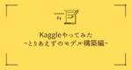
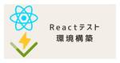

KENTEM TechBlog
https://tech.kentem.jp/
KENTEM(建設システム)の技術に関するブログです。
フィード

Kaggleやってみた
KENTEM TechBlog
はじめに こんにちは！昨年度に土木系の大学院を修了し、今年新卒で入社したK.Mと申します！現在は研修を終え、フロントエンドエンジニアとしてキャリアをスタートしました。今回はそんな私がKaggleのチュートリアルにチャレンジした事について記事にいたします！(ペーペーなんだからフロントの勉強しろよ！という声が聞こえてきそうですが・・・😅) Kaggleとは？ Kaggleとは機械学習コンペティションプラットフォームです。企業や政府がコンペティション形式で課題を提示し、各参加者は課題に対する機械学習モデルを構築して予測精度を競い合います。競い合って楽しいだけでなく、コンペティションには賞金が設定され…
15時間前

Vite × Vitest × React Testing Library環境構築 1
1
KENTEM TechBlog
こんにちは。私は主にReactでWEBフロントエンド開発を行っています。 機能が多く複雑なNext.jsではなく、Viteを用いたシンプルな構成のReactプロジェクトを立ち上げることも多いです。 そういったプロジェクトにコンポーネントテストを導入する際、環境構築に手間取ることが多かったので、この記事でその方法を紹介します。 手順 ViteによるReact環境構築 パッケージのインストール TypeScriptの設定ファイルの修正 Vitestのセットアップファイルの作成 Viteの設定ファイルの修正 環境構築完了 動作確認と追加設定 動作確認 テスト結果を見やすくするための追加設定 まとめ …
4日前

KENTEM TECH CONF 2024 Summer を開催しました！
KENTEM TechBlog
こんにちは！開発部エンジニアのH.Tです。 2024年6月25日(火)～2024年6月26日(水)の2日間で、 KENTEM TECH CONF 2024 Summer を開催しました。 KENTEM TECH CONF とは？ 注目ポイント タイムテーブルのアップデート タイムキーパーの活躍 新しいアンケート形式 あとがき おわりに KENTEM TECH CONF とは？ KENTEM TECH CONF は、半年に1度開催しているオンライン技術発表会です！ イベントの目的や背景については、以下の記事で詳しくご説明しています。 tech.kentem.jp 注目ポイント 新しい取り組みが行…
22日前
読書の薦め
KENTEM TechBlog
u{ text-decoration: none; background: linear-gradient(transparent 50%, yellow 50%) !important;} 皆さんは読書好きですか？私はあまり好きではありません。 というか、学生時代から社会人になるまでは嫌いですらありました。 嫌いになった背景としては学生時代に本を与えられすぎたことに起因しています。 KENTEMに入社後、とある上司のチームに入ったことで克服することができましたので、 今回は私の読書嫌い克服の経緯と読書との付き合い方について書き綴ってみたいと思います。 意識の先 やらない理由 それぞれの読書ス…
1ヶ月前
オートマチックの功罪
KENTEM TechBlog
日本国内を走る車の約98％以上はAT車と言われており、MT車の割合は2%に満たないと言われております。 敢えてMT車を選ぶ人も極々少数いますが、なぜその一部の人たちはMT車を選択するのか聞いてみると、おおよそ次のような答えが返ってきます。 自分で車を操作している感覚が好き。運転が楽しい 燃費がいい 微妙な速度調整がやりやすい メンテナンスが楽である １つ目については個人の感性なので、「それが好きだから！」と言われたらそれ以上は何も言えないですが、２～４については果たして本当にそうなのでしょうか？ ひと昔前であれば確かにその通りだったかもしれません。が、技術が進歩した昨今、AT車でも燃費の面で負…
1ヶ月前
Azure App Service へのデプロイ方法の違い
KENTEM TechBlog
u{ text-decoration: none; background: linear-gradient(transparent 50%, yellow 50%) !important;} Azure App Service にデプロイする方法はいくつかあります。 皆さんはどのような方法を選択していますか？ Web デプロイ パッケージ（Zip）デプロイ FTPデプロイ、etc… はじめに メリット / デメリット Web デプロイ メリット デメリット パッケージデプロイ（Zip）デプロイ メリット デメリット メリット・デメリットまとめ プラットフォーム依存 アップロード単位 ファイルの…
2ヶ月前
iOSのストアで言語を日本語と認識させるためのUnity多言語対応
KENTEM TechBlog
開発部エンジニアのY.A.です。 Unityで多言語対応してみた話です。 環境 はじめに ストアの言語表示を「日本語」にするには Unityの多言語対応 Unity用ローカライズライブラリの導入 日本語用の設定の追加 iOS向けの設定 まとめ おわりに 環境 Unity 2023.2.20f1（日本語） はじめに 今回の記事は、Unityで開発したアプリをAppleのストアに公開した際に、下部の言語の欄が「英語」になっていたことから始まりました。 日本語しか対応していないので、できれば日本語にしていきたいですね。 ストアの言語表示を「日本語」にするには Appleのストアに日本語と表示させるに…
2ヶ月前
WebサービスでExcelを使おう
KENTEM TechBlog
こんにちは！ 皆さん、Excelは好きですか？ 私は好き嫌いに関わらず、仕事でExcelに全く触らない日というのはほぼありません。 弊社のお客様も仕事でExcelを触る機会は多いようで、弊社のシステムがWeb化しても、Excelに対する熱い要望をいただくことが多くあります。 今回は、私の所属する 施工体制クラウド プロジェクトで、Excelライブラリを検討した時の進め方と調べたツールをご紹介します。 要件の整理 Excelの形で入力したい ／ Excelファイルを見たい Excelファイルを出力したい Excelファイルを取り込みたい 余談：Officeを使えば最強では？ Excelを扱えるラ…
2ヶ月前
VisualStudioでTypeScript Analyzerを試してみた
KENTEM TechBlog
こんにちは。KENTEM第１開発部のS.Eです。 私はクラウドサービスのフロントエンドエンジニアとしてプロジェクト業務に携わっています。 現在のプロジェクトは新規で立ち上げ、既に２年ほど経過したような状況です。 プロジェクトメンバーの入れ替えも何度か発生している中で挙がってきた意見があります。 それは『コーディング規約（ルール）がわかりづらい』といったものです。 コーディング規約といっても「末尾にセミコロンを付ける」とか「文字列はシングルクォートで括る」とか単純なものが多いです。 プロジェクトの運用等についてはWikiで示していたりしたのですが、 明確な取り決め等はできておらず、レビュー時の指…
2ヶ月前
2024年6月 KENTEM 技術スタックのご紹介
KENTEM TechBlog
KENTEMでは、モダンな開発を目指して、使う技術を日々アップデートしています。 今回は、2024年6月時点のKENTEMの技術スタックと新たに加わった技術をご紹介します。 新しく加わった技術のご紹介 CosmosDB スケーラブルなDBである「CosmosDB」を採用するケースが増えてきました。 ”正規化こそが正義” として育ってきた世代としては、考え方の違いに苦労するところはありますが、脳みそもアップデートしていかなければいけませんね。 Swift なぜ今Swiftなのか？疑問に思われる方もいらっしゃるかと思います。 今まで、iOS/Android双方のプロダクトを効率的に開発するためにク…
2ヶ月前
【ReactNative/iOS】プライバシーマニフェストに対応する
KENTEM TechBlog
こんにちは。第2開発部エンジニアのS.H.です。 2024年2月29日にApp Storeのプライバシー要件がアップデートされ、 2024年5月1日以降のアップデートではプライバシーマニフェストの対応が必須になりました。 私が所属する 遠隔臨場 SiteLive のiOS版アプリでも対応したので、 ReactNativeならではの点を中心にご紹介します。 developer.apple.com この記事では2024年5月時点の公開情報を元に解釈・対応した内容をご紹介します。 今後のAppleの方針変更により追加の対応が必要になる可能性があります。 やるべきこと アプリの Privacy Man…
2ヶ月前
Reactのファイル構成を考えてみた
KENTEM TechBlog
はじめに そこに至る経緯 違和感の正体 ファイル構成（案） ParantComponent/ChildComponent CustomHooks Store Container 運用上の注意点 結果 おわりに はじめに C++、C#、TypeScript、、、とオブジェクト指向プログラミングの道を進んできた私の次の仕事は『Reactでの新規プロジェクト』でした。 今回は半年間Reactプロジェクトを稼働させた中で悩んだファイル構成について書かせて頂きます。 そこに至る経緯 直前のプロジェクトはTypeScript+Node.jsでWeb3Dアプリケーションでした。 それはもうゴリゴリとクラスと…
3ヶ月前
クラウドサービス（AWS）のコストを削減してみよう
KENTEM TechBlog
クラウドサービスの請求額をみて「高いなぁ」と感じたことはありますか？ 先月と比べても微増だし、円安の影響もあるし仕方ないとスルーしていると、気付かぬところで大きな損失を被っているかもしれません！ そこで今回はAWSのコスト削減で最低限ここだけは押さえておくべきポイントを紹介します。 ジョブに適した料金モデルの使用 EC2に関しては、まず Savings Plans を検討しましょう。 RDS に関しては、リザーブドインスタンスを検討しましょう。 適切なストレージクラスを利用する まずは S3 の使用状況を分析しましょう。 適切なストレージクラスを検討しましょう。 まとめ おわりに ジョブに適し…
3ヶ月前
Elasticsearch + Kibana + C# でライトなデータ分析
KENTEM TechBlog
Web アプリケーションなどで日々蓄積されるログデータ、その他ちょっとしたデータを可視化・分析してみたくなったことは無いでしょうか？ データを可視化する際にぱっと思い浮かぶのは Excel だったりするでしょうが、データを Excel に貼って範囲指定してグラフを挿入して...と、非常に煩わしいものです。 データ サイエンスが注目される昨今、世の中には数多くのデータ分析・可視化ツールがありますが、ちょっとかじってみるにも、なかなか有償のものには手が出しづらく、使い方から調べるのも大変で最初の一歩が出ないことも多々あるかと思います。 そこで、Elastic 社からダウンロード版として入手も可能な…
3ヶ月前
Microsoft Loopを活用して、ドキュメント文化を築こう
KENTEM TechBlog
こんにちは。第2開発部のマネージャーです。 最近私の周りでは、Microsoft Loop がプチブームになっています。 昨年末にMicrosoftから法人向けに一般提供されたばかりで、認知度はそれほど高くはないのですが、使い始めると非常に便利です。 今回は、私のLoopの活用方法を皆さんにシェアします。 「Microsoft Loop」の何が良いか？ 「Microsoft Loop」の活用方法 会議の準備から議事録まで Loop だけで 議事録は全員で編集その場で確認 活用方法2: ルールや手続きの手順・方法をLoopで文書化 ドキュメント化は生成系AIと相性抜群!! おわりに 「Micro…
3ヶ月前
ネットワーク上での非同期ストリームのパフォーマンスを検証してみた
KENTEM TechBlog
最近「非同期ストリーム」というのを知りました。 今回はそんな非同期ストリームについて API で利用した場合のパフォーマンスの検証結果をご紹介します。 非同期ストリームについて 検証 サーバー クライアント まとめ おわりに 非同期ストリームについて 通常データを取得するメソッドはこんな感じです。 public Item[] GetItems() { } 非同期にするとこんな感じ。 public Task<Item[]> GetItemsAsync() { } 非同期ではあるけど、必要なデータが集まるまで待たされる。集まったデータは一括で呼び出し元に返されます。 これらの方法は必要なデータを集…
4ヶ月前
モバイルアプリをReact Nativeで作り直した話
KENTEM TechBlog
こんにちは。KENTEMでエンジニアをしているK.Kです。 今回は、私が所属する 遠隔臨場 SiteLive プロジェクトで、 モバイルアプリのフレームワークを変更せざるを得ない状況になりアプリを作り直した話を紹介します。 最後に、React Nativeを使ってみた感想も少し触れさせていただきました。 背景 事件 フレームワーク選び 開発期間の短縮 学習コストの低減 拡張性の確保 React Nativeを使ってみて デバッグ実行の問題 OSSライブラリの多用問題 このプロジェクトで感じたこと おわりに 背景 当時、弊社のモバイルアプリはXamarinを使った開発が多く、共通化された処理を使…
4ヶ月前
最近読んだ本の紹介 vol.2
KENTEM TechBlog
情報共有システム事業部のY.Kです。 情報共有システム RevSIGNの開発を担当しています。 前回に引き続き、今回も私がここ数か月の間に読んだ本の中から、ソフトウェアの開発に関連する次の2冊を簡単に紹介したいと思います。 リーダブルコード（オライリー・ジャパン） プロジェクトマネジメントの基本が全部わかる本（翔泳社） 個人的にはどちらも初心者には少し難しいかもですが、次のステップへ進みたい方にはお薦めできる本かなと思います。 リーダブルコード（オライリー・ジャパン） プロジェクトマネジメントの基本が全部わかる本（翔泳社） まとめ おわりに リーダブルコード（オライリー・ジャパン） 「全プログ…
4ヶ月前
Three.jsを勉強し始めた話
KENTEM TechBlog
こんにちは。KENTEM第１開発部のM.Oです。 私は3D関連のデスクトップアプリチームのマネージャをしています。 さて本日は、私が最近KENTEMの目標制度を利用して勉強し始めた、Three.jsについて書いてみます。 なお、本記事は非常に初歩的な内容となっています。 Three.jsとは？ キューブを描画してみる Node.jsのインストール プロジェクトフォルダーの作成 Three.jsのインストール HTMLファイルの作成 JavaScriptファイルの作成 Vite（フロントエンド開発ツール）のインストール ローカル開発サーバーの起動と動作確認 おわりに Three.jsとは？ th…
5ヶ月前
効率化のためのNuGet導入
KENTEM TechBlog
こんにちは。KENTEMでバックエンドを担当しているおかおかです。 KENTEM TECH CONF 2023 Winterで発表したKENTEM NuGetをご紹介します。 NuGetとは NuGetを利用した目的 Visual StudioでNuGetパッケージの作り方 NuGetサーバーへnupkgを発行 Visual StudioでNuGetサーバーを参照追加 NuGetを導入したことでの効果 おわりに NuGetとは Visual Studioで開発されている方は利用されていると思いますが、以下のことです。 NuGetとは NuGetを利用した目的 Windowsアプリやモバイルアプ…
5ヶ月前
【Unity】Material(Shader)のPropertyに別値を設定！
KENTEM TechBlog
第２開発部エンジニアのi.J.です。 Unity開発でMaterial(Shader)について実際におこなったことを共有したいと思います。 キャプチャ環境 開発中に必要になったこと 解決方法発見！ 簡単なサンプルで説明 まとめ おわりに キャプチャ環境 Unity 2022.3.19 開発中に必要になったこと 点群を構成している各点に対して標高に応じて色を設定するヒートマップ表示に対応することになりました。 点群オブジェクトが複数あり、それらに同じMaterial(Shader)がアタッチされています。点の色はShader内で点の標高値によって設定する方針となりました。 ところが、点群オブジェ…
6ヶ月前
【OpenAI】API利用料を節約したい…！トークンシステムについて調べてみた
KENTEM TechBlog
こんにちは、第2開発部のY.Tです。 近年のトレンドと言えばなんといってもAI生成ですよね。 最近発表された動画生成モデルのSoraや、画像の読み取りに対応したGPT-4 Turbo with visionなど。 日々AI技術の進歩に驚かされております。 有料にはなりますが、私たち一般ユーザーでもOpenAIのAPIを利用すれば簡単にアプリにChatGPTによるAI生成機能を盛り込むことができる時代になりました。 料金システムはリクエストのテキスト量に基づいた「トークン」という単位に応じた従量課金制で、 詳しくはOpenAIの公式ぺージに記載されています。 …が、パッと見ただけではどれくらいか…
6ヶ月前
国土地理院の地図を使ってみた
KENTEM TechBlog
こんにちは。第１開発部でマネージャーをしているM.Tです。 私は現在、クラウドサービスプロジェクトの開発リーダーを務めています。 本プロジェクトでは、地図の表示とそこに線やマーカーを描画する機能を提供しています。 元々デスクトップアプリだったものをWEBアプリにリニューアルすることになっていました。せっかくWEBアプリにするなら、現在と同様の機能を簡単に提供できるものがないかを探していました。 そんなとき、国土地理院の地図とその地図の表示や線などの描画できる React Leaflet があることを知りました。 とても簡単に地図機能が作成できましたので今回は React Leaflet の紹介…
6ヶ月前
ブラウザキャッシュ問題を解決！キャッシュバスティングについて
KENTEM TechBlog
Webアプリを作る上であるあるな話である「キャッシュ問題」 開発中やアップデート直後に何か動かなくなる時がある・・・ ファイル差し替えたのに古いものが表示されてしまう・・・ スーパーリロードやキャッシュ削除を試すと大丈夫！ →だけど面倒だしログイン情報とか消える場合もあるし・・・極力やりたくない 開発者やPCスキルが高い人には何とか解決できるかもしれませんが、それ以外の人には基本不具合としか認識されません。 そんな不毛な問題に終止符を打つ「キャッシュバスティング」について説明します！ キャッシュバスティングとは？ 具体的なキャッシュバスティングの方法 ASP.NET Coreの場合 おわりに …
6ヶ月前
プログラミング好き集まれ！KENTEMエンジニア採用の解説
KENTEM TechBlog
新卒の学生の方、転職をお考えの方、双方にとって年末年始は、今後のことについてじっくり考える時間となったのではないでしょうか？ 「エンドユーザーと近い距離で、集中してプログラミングをしたい」という希望をお持ちのエンジニアの方は、是非KENTEMの選考に進むことをご一考ください。 そのような方の背中を後押しするきっかけになればと考え、今回はKENTEMのエンジニア採用について解説します。 KENTEMのエンジニア採用の流れ 論より証拠：コーディングテスト コーディングテストって何？ テストの出題内容 なぜコーディングテストをするのか？ コーディングテストに向けたアドバイス まずは手を動かして、後で…
7ヶ月前
KENTEM TECH CONF 2023 Winterを開催しました！
KENTEM TechBlog
こんにちは。E.Kです。 2023年12月26日(火)～2023年12月27日(水)の2日間で、KENTEM TECH CONF 2023 Winterを開催しました。 KENTEM TECH CONFって何？という方は、以下の記事をご覧ください。 （イベントの目的についても記載しております。） tech.kentem.jp 新企画の立ち上げについて イベントの盛り上がりを求め、今回は運営チームで新企画の提案から行いました。 企画案としては、以下のものがあがりました。 カテゴリに分ける（初心者、若手ラベル） 表彰を行う Q&Aをアプリで行う ハイブリッド型にする（Zoomでも対面でも視聴可） …
7ヶ月前
開発スタート時の設計手順を言語化してみる
KENTEM TechBlog
この記事は、 KENTEM TechBlog アドベントカレンダー2023 16日目、12月22日の記事です。 こんにちは！KENTEM第２開発部のHFです。 KENTEM Tech Blogのアドベントカレンダー2023も残すところあと2回となりました。 年の瀬も近付いていますが、皆様はどんな一年だったでしょうか？ 大きな障害を迎えて大変だった方、努力の結果資格試験に合格した方、つつがなく過ごせたよという方、 色々な方がいらっしゃるかと思います。 皆様まずは一年間お疲れ様でした。 堅い技術記事を読みたい時期ではないので、私が普段プロジェクトをスタートさせる際の設計手順やツール類についてゆるっ…
8ヶ月前
Azure FilesをAzure App Serviceのドライブとしてマウントする
KENTEM TechBlog
この記事は、 KENTEM TechBlog アドベントカレンダー2023 15日目、12月21日の記事です。 こんにちは。 私が携わっているプロジェクトで、Azure App Service（以降 App Service と表記）で大容量かつ大量のファイルを取り扱いたいケースに直面しました。 通常であれば、Azure Storage Account（以降ストレージ アカウントと表記）の一部である Blob ストレージとの連携が想定されますが、 今回のケースではそのファイル群を移動したり、リネームしたり、はたまた圧縮解凍したりと諸々の操作ができるよう要件が定められています。 Blob ではファ…
8ヶ月前
ブラウザからAzureBlobStorageにファイルをアップロードしてみた
KENTEM TechBlog
この記事は、 KENTEM TechBlog アドベントカレンダー2023 14日目、12月20日の記事です。 こんにちは、KENTEM のまつです。 ブラウザからAzureBlobStorageにファイルをアップロードする機会があり、azure-sdk-for-jsのstorage-blobを使用しました。 Microsoft LearnにHowToは揃っていますが、ブラウザからアップロードする記事が少なかったため、いくつかポイントを紹介します。 Azure Blob Storageとは？ なぜブラウザから？ 【ポイント①】認証 【ポイント②】CORS設定 【ポイント③】一度にアップロードで…
8ヶ月前